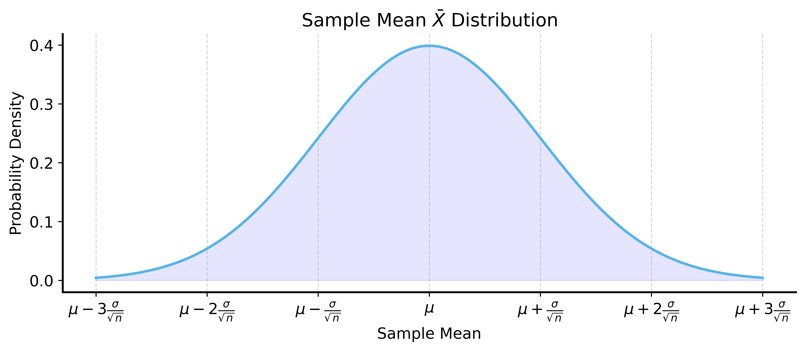
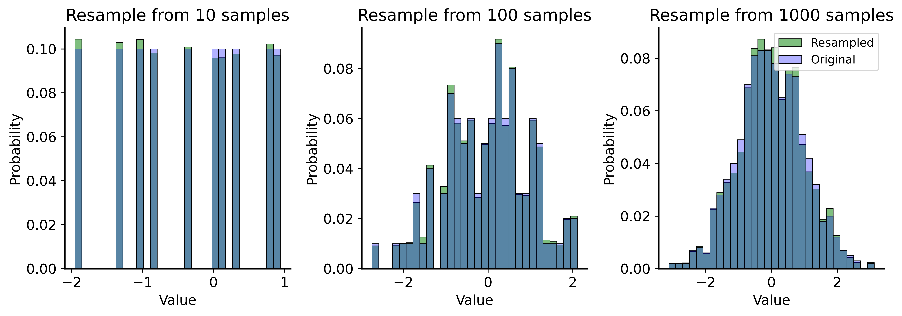
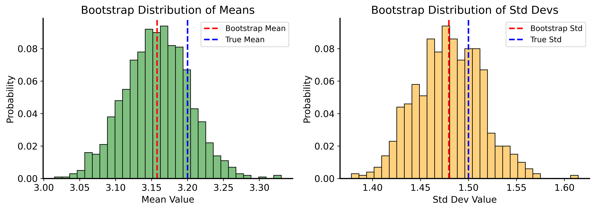
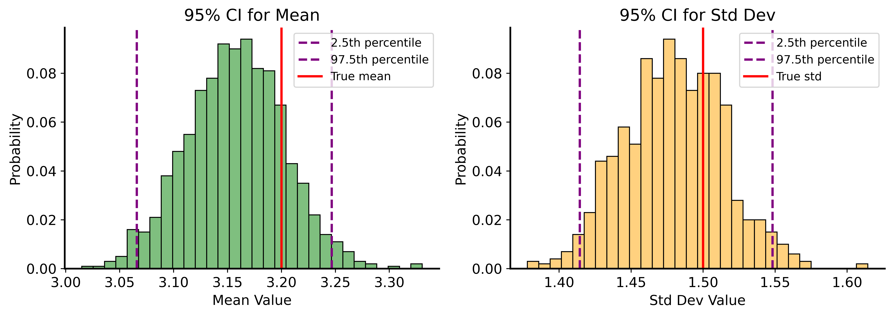
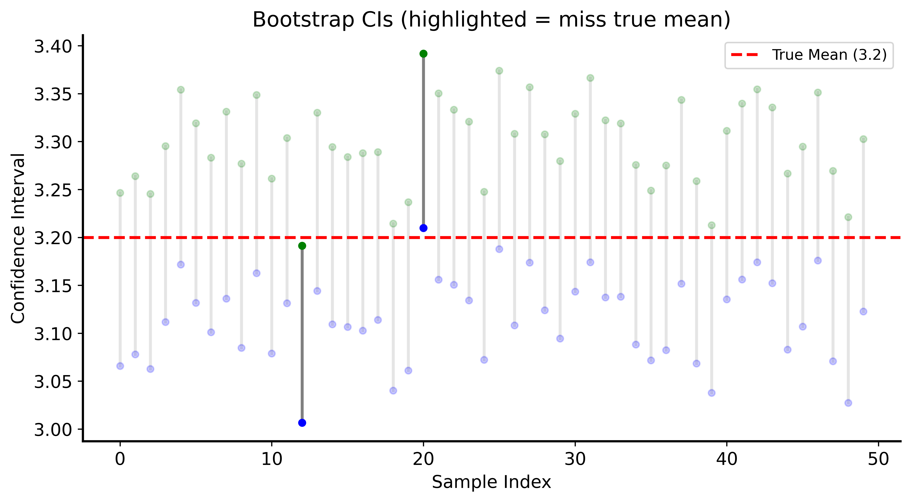
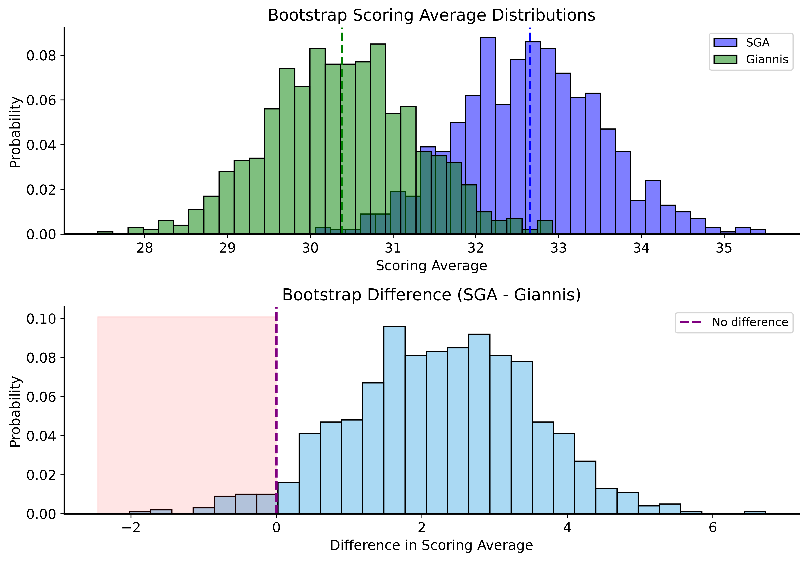

Lecture 06: Confidence Intervals and Bootstrapping
Joseph Rudoler
2026-01-06
Recap
- Hypothesis testing: quantify evidence against \(H_0\) with p-values
- p-value: probability of observing data as extreme as ours, under \(H_0\)
Today: A different way to quantify uncertainty — confidence intervals
Confidence Intervals
Instead of asking “is \(\mu = 0\)?”, ask:
“What is a plausible range of values for \(\mu\)?”
A confidence interval gives a range \([L, U]\) that likely contains the true parameter:
\[\mathbb{P}(\theta \in [L, U]) = 1 - \alpha\]
Important Distinction
The parameter \(\theta\) is fixed (but unknown)!
What varies is the sample we draw.
- Different samples → different confidence intervals
- Some CIs contain \(\theta\), some don’t
- \((1-\alpha)\)% of all CIs will contain \(\theta\)
CI When Distribution is Known
By the Central Limit Theorem, sample mean \(\bar{X}\) is approximately normal.
We know:
- \(\bar{X}\) is unbiased: \(\mathbb{E}[\bar{X}] = \mu\)
- Variance: \(\text{Var}(\bar{X}) = \sigma^2/n\)
- Distribution is symmetric
Visualizing the Sampling Distribution
Probability Within \(z\) Standard Errors
| \(z\) | Probability within \(\pm z\) SE |
|---|---|
| 1 | 68.3% |
| 2 | 95.4% |
| 3 | 99.7% |
For a 95% CI, use \(z_{0.025} \approx 1.96\)
Formula for CI
\[\left[\bar{X} - z_{\alpha/2}\frac{\sigma}{\sqrt{n}}, \bar{X} + z_{\alpha/2}\frac{\sigma}{\sqrt{n}}\right]\]
This requires knowing (or estimating) \(\sigma\)!
The Problem
What if we don’t know the distribution of our data?
- CLT helps for means, but needs large \(n\)
- What about other statistics (median, variance)?
Solution: Use the data itself to estimate uncertainty!
Resampling Methods
Key insight: If sample is large enough, it approximates the population.
So we can sub-sample from our data to understand variability!
Samples Approach Population

Resampling from the Sample

Bootstrapping
Bootstrap = repeatedly resample with replacement from your data
Algorithm:
- Given dataset of size \(n\), draw sample of size \(n\) with replacement
- Compute statistic (mean, median, etc.) on bootstrap sample
- Repeat many times (e.g., 1000)
- Use distribution of statistics for inference
Why Sample With Replacement?
We want independent samples from our proxy population.
Without replacement: we’d get the same sample back every time!
(Only \(n\) datapoints, so sampling \(n\) without replacement = original sample)
Bootstrap Example
Code
rng = np.random.default_rng(42)
sample_size = 1000
n_bootstraps = 1000
original_sample = rng.normal(loc=3.2, scale=1.5, size=sample_size)
bootstrapped_means = []
bootstrapped_std = []
for _ in range(n_bootstraps):
resample = rng.choice(original_sample, size=sample_size, replace=True)
bootstrapped_means.append(np.mean(resample))
bootstrapped_std.append(np.std(resample, ddof=1))
print(f"True mean: 3.2, Bootstrap mean: {np.mean(bootstrapped_means):.2f}")
print(f"True std: 1.5, Bootstrap std: {np.mean(bootstrapped_std):.2f}")True mean: 3.2, Bootstrap mean: 3.16
True std: 1.5, Bootstrap std: 1.48Bootstrap Distributions

Bootstrap Confidence Intervals
The magic: use percentiles of bootstrap distribution!
For 95% CI:
- Lower bound = 2.5th percentile
- Upper bound = 97.5th percentile
Bootstrap CI Example
Code
lower_bound_mean = np.percentile(bootstrapped_means, 2.5)
upper_bound_mean = np.percentile(bootstrapped_means, 97.5)
print(f"95% CI for Mean: ({lower_bound_mean:.3f}, {upper_bound_mean:.3f})")
print(f"True mean: 3.2")
lower_bound_std = np.percentile(bootstrapped_std, 2.5)
upper_bound_std = np.percentile(bootstrapped_std, 97.5)
print(f"95% CI for Std: ({lower_bound_std:.3f}, {upper_bound_std:.3f})")
print(f"True std: 1.5")95% CI for Mean: (3.066, 3.247)
True mean: 3.2
95% CI for Std: (1.414, 1.548)
True std: 1.5CI Visualization

What Does a 95% CI Mean?
The uncertainty comes from sampling, not the parameter!
If we repeatedly:
- Draw a new sample from the population
- Compute a 95% CI
Then 95% of those CIs will contain the true parameter.
Demonstrating CI Coverage
Proportion of CIs that MISS the true mean: 0.0580
(Expected: ~0.05)Visualizing CI Coverage

Application: NBA Scoring
Let’s compare SGA and Giannis with bootstrap CIs!
SGA 95% CI: (30.97, 34.42)
Giannis 95% CI: (28.70, 32.09)Overlapping CIs
SGA’s CI doesn’t contain Giannis’s point estimate, but…
The CIs overlap!
This means we should account for both players’ variability when comparing them.
Better Comparison: Difference of Means
P(Giannis >= SGA): 0.0340Bootstrap Distributions Comparison

Bootstrap Under the Null
For a proper hypothesis test, combine both players’ data:
Code
np.random.seed(42)
n_games_sga = len(compare_df[compare_df["player"] == "Shai Gilgeous-Alexander"])
n_games_giannis = len(compare_df[compare_df["player"] == "Giannis Antetokounmpo"])
observed_diff = (compare_df[compare_df["player"] == "Shai Gilgeous-Alexander"]["PTS"].mean()
- compare_df[compare_df["player"] == "Giannis Antetokounmpo"]["PTS"].mean())
n_bootstraps = 1000
bootstrapped_diffs = []
for _ in range(n_bootstraps):
sga_sample = compare_df["PTS"].sample(n=n_games_sga, replace=True)
giannis_sample = compare_df["PTS"].sample(n=n_games_giannis, replace=True)
diff = sga_sample.mean() - giannis_sample.mean()
bootstrapped_diffs.append(diff)
p_value = np.mean(np.array(bootstrapped_diffs) >= observed_diff)
print(f"Observed difference: {observed_diff:.2f}")
print(f"Bootstrap p-value: {p_value:.4f}")Observed difference: 2.30
Bootstrap p-value: 0.0440Key Insight
Original p-value (last lecture): ~0.004
Bootstrap p-value (accounting for both variabilities): ~0.04
An order of magnitude difference!
Properly accounting for uncertainty matters!
Summary
Confidence Intervals
- Give a range of plausible values for parameters
- 95% CI means 95% of such CIs contain the true value
Bootstrapping
- Resample with replacement from your data
- Estimate any statistic’s distribution
- No distributional assumptions needed!
Application
- Bootstrap CIs are easy to compute
- Can test hypotheses by comparing distributions
Next Time
Permutation Tests
- Another simulation-based method
- Powerful and widely applicable
- The “one test” unifying framework